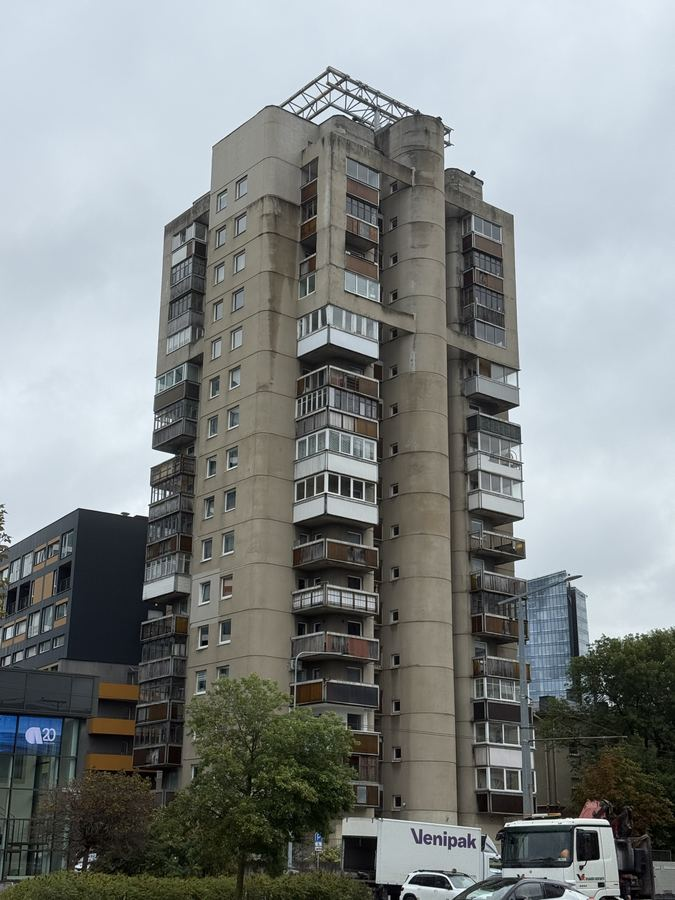
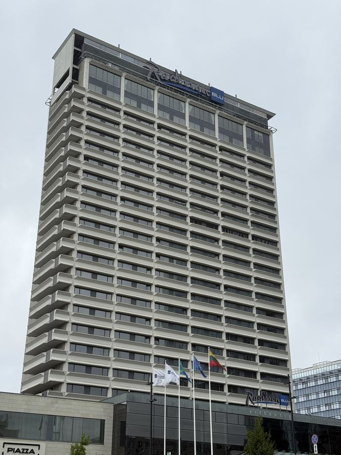
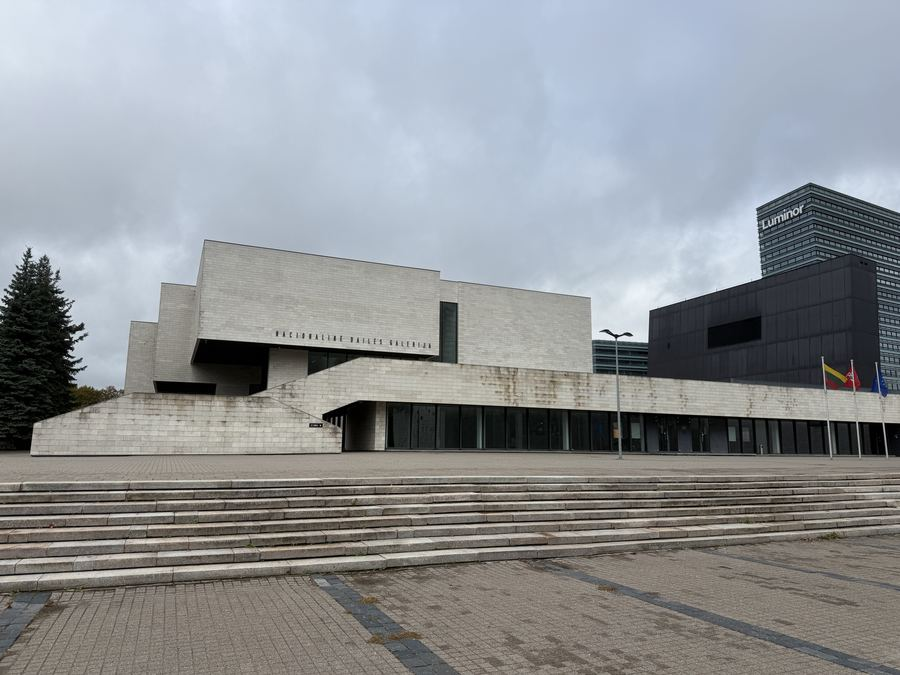
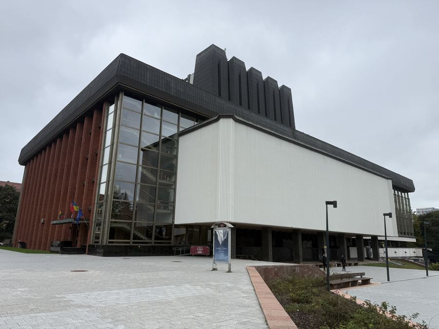
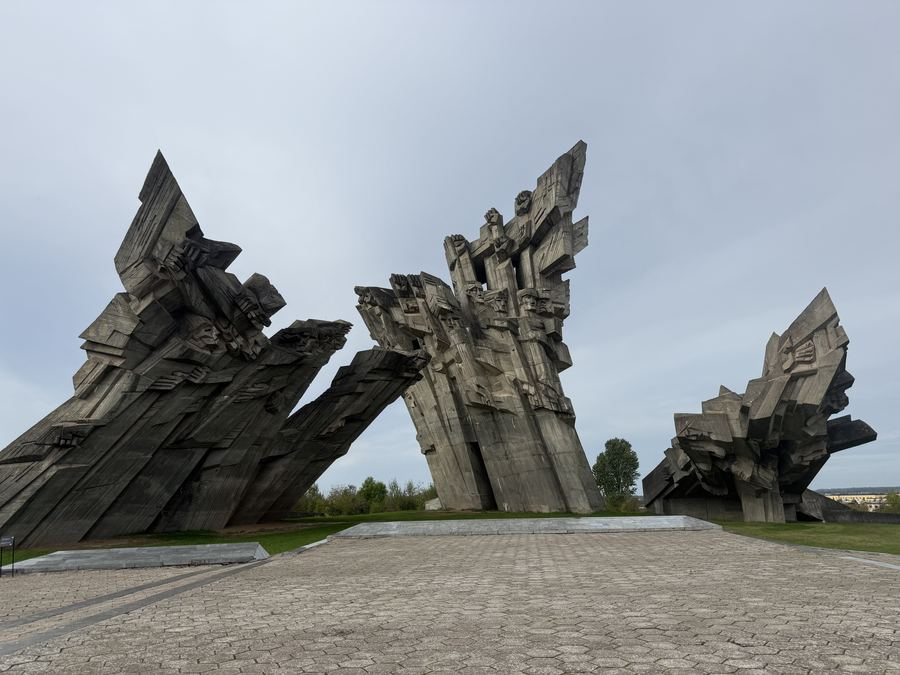
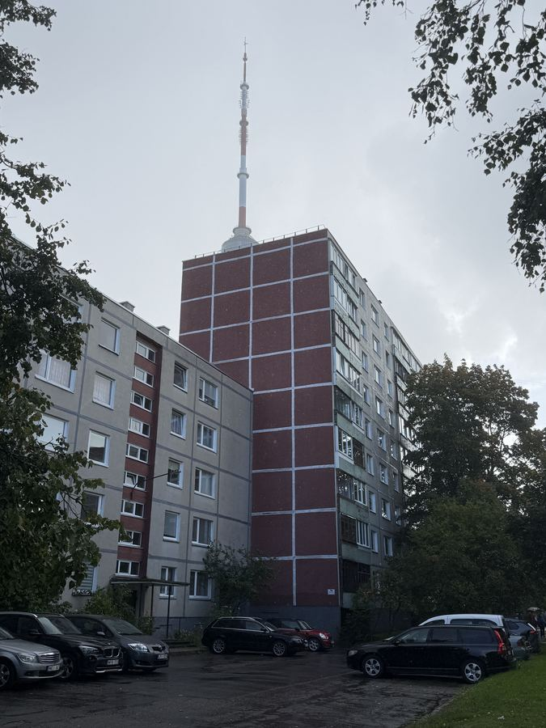
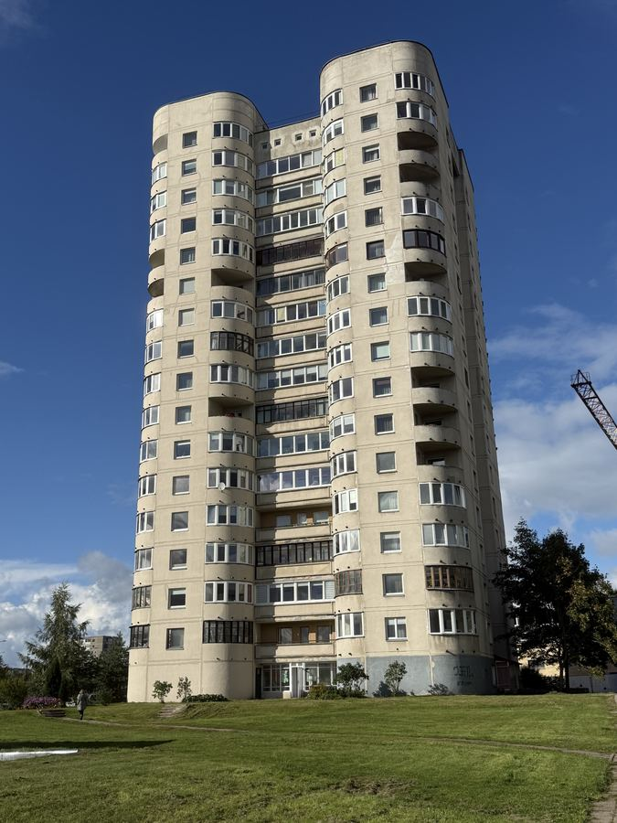
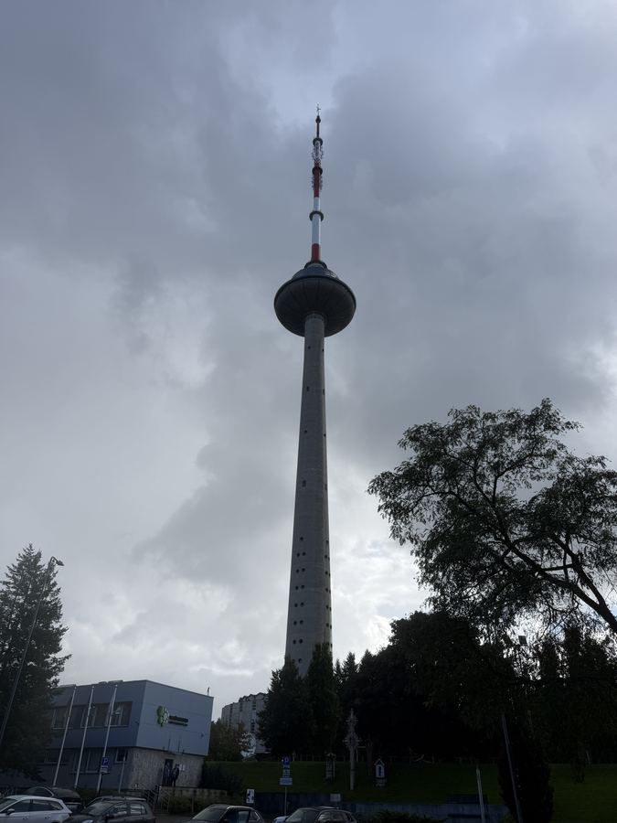
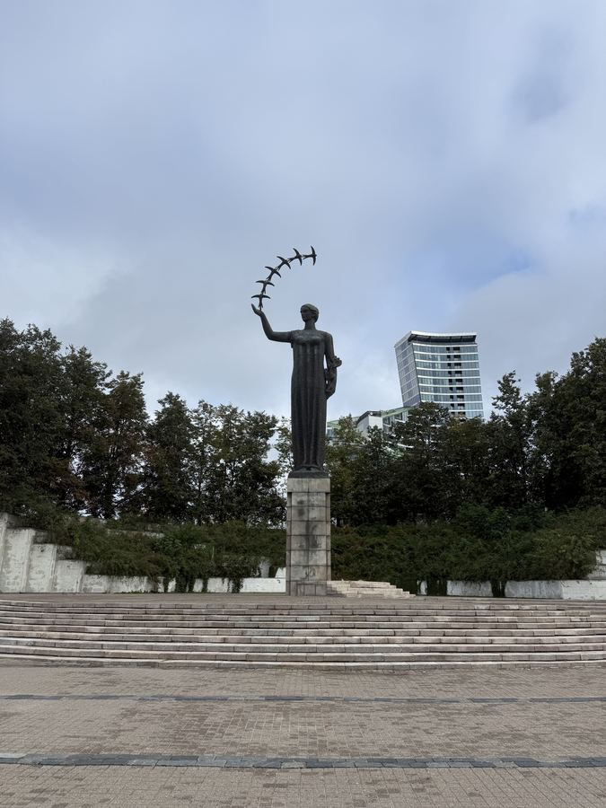
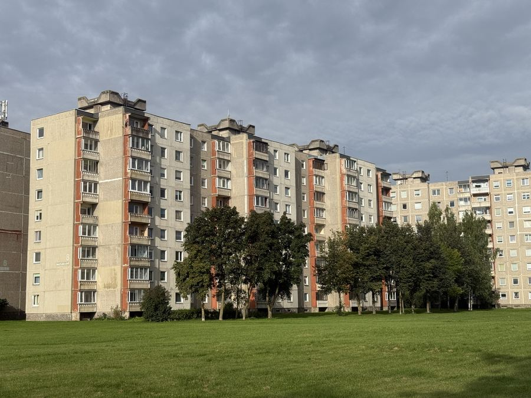

01 / 11
13 Konstitucijos Avenue

02 / 11
Hotel Lietuva

03 / 11
National Gallery of Art

04 / 11
National Opera and Ballet Theatre

05 / 11
Ninth Fort Memorial

06 / 11
Palace of Concerts and Sports

07 / 11
Residential Block, Karoliniškės

08 / 11
Residential Blocks, Fabijoniškės

09 / 11
Vilnius TV Tower

10 / 11
Woman with Birds

11 / 11